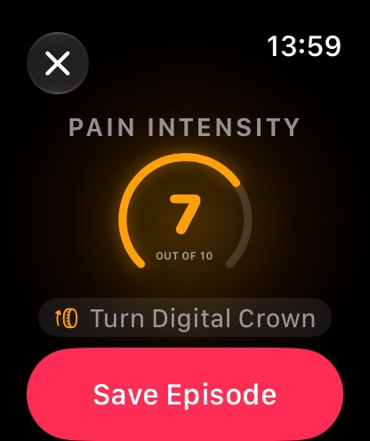
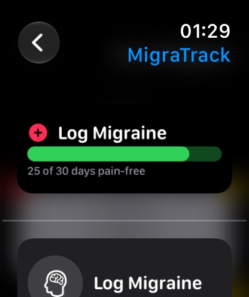
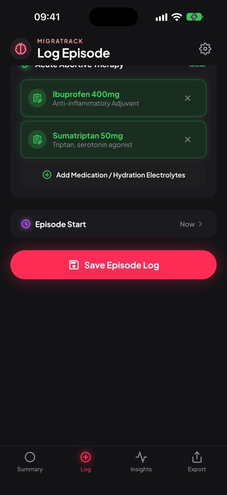
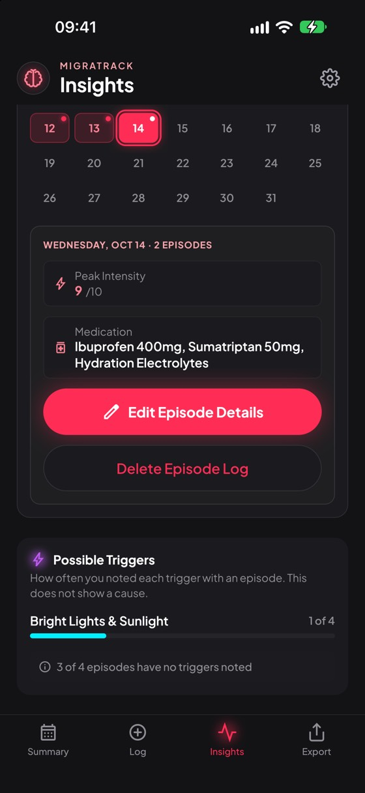

<title>Путь пользователя MigraTrack</title>
<link rel="preconnect" href="https://fonts.googleapis.com">
<link rel="preconnect" href="https://fonts.gstatic.com" crossorigin>
<link rel="stylesheet" href="https://fonts.googleapis.com/css2?family=Plus+Jakarta+Sans:wght@400;500;600;700;800&family=JetBrains+Mono:wght@400;500&display=swap">
<style>
/* Layout: a numbered journey. Each step has its story on the left and the device screens on the right; phone width stacks them. */
:root {
  --bg: #0e0e10;
  --surface: #18181b;
  --surface-2: #232327;
  --fg: #f4f1f2;
  --muted: #a69c9f;
  --caption: #e6bcbd;
  --pink: #ff2d55;
  --green: #30d158;
  --cyan: #00e0ee;
  --amber: #ff9f0a;
  --line: rgba(255, 255, 255, 0.09);
  --shot-ring: rgba(255, 255, 255, 0.14);
  --font-ui: "Plus Jakarta Sans", -apple-system, "SF Pro Text", "Segoe UI", sans-serif;
  --font-data: "JetBrains Mono", ui-monospace, "SF Mono", Menlo, monospace;
  color-scheme: dark;
}
@media (prefers-color-scheme: light) {
  :root:not([data-theme="dark"]) {
    --bg: #f7f3f4; --surface: #ffffff; --surface-2: #efe7ea; --fg: #1b1719; --muted: #6c6064;
    --caption: #9a2f4c; --pink: #d6003a; --green: #13803a; --cyan: #00727e; --amber: #a85f00;
    --line: rgba(27, 23, 25, 0.10); --shot-ring: rgba(27, 23, 25, 0.16); color-scheme: light;
  }
}
:root[data-theme="light"] {
  --bg: #f7f3f4; --surface: #ffffff; --surface-2: #efe7ea; --fg: #1b1719; --muted: #6c6064;
  --caption: #9a2f4c; --pink: #d6003a; --green: #13803a; --cyan: #00727e; --amber: #a85f00;
  --line: rgba(27, 23, 25, 0.10); --shot-ring: rgba(27, 23, 25, 0.16); color-scheme: light;
}

* { box-sizing: border-box; }
body {
  background: var(--bg);
  color: var(--fg);
  font-family: var(--font-ui);
  font-size: 15px;
  line-height: 1.55;
  -webkit-font-smoothing: antialiased;
}
.page { max-width: 1180px; margin: 0 auto; padding-inline: 20px; padding-block: 40px 72px; display: grid; gap: 56px; }

h1, h2, h3 { margin: 0; text-wrap: balance; letter-spacing: -0.01em; }
p { margin: 0; }
.eyebrow { font-size: 11px; font-weight: 700; letter-spacing: 0.12em; text-transform: uppercase; color: var(--caption); }

/* Intro */
.intro { display: grid; gap: 18px; max-width: 760px; }
.intro h1 { font-size: clamp(30px, 5vw, 44px); font-weight: 800; line-height: 1.08; }
.intro h1 em { font-style: normal; color: var(--pink); }
.intro p { color: var(--muted); font-size: 16px; max-width: 64ch; }

.facts { display: grid; grid-template-columns: repeat(4, minmax(0, 1fr)); gap: 1px; background: var(--line); border: 1px solid var(--line); border-radius: 16px; overflow: hidden; }
.fact { background: var(--surface); padding: 16px 18px; display: grid; gap: 4px; min-width: 0; }
.fact b { font-size: 20px; font-weight: 800; line-height: 1.25; font-variant-numeric: tabular-nums; }
.fact span { color: var(--muted); font-size: 13px; }
.fact b.ok { color: var(--green); }

/* Contents */
.toc { display: grid; gap: 12px; }
.toc ol { list-style: none; margin: 0; padding: 0; display: flex; flex-wrap: wrap; gap: 8px; }
.toc a {
  display: inline-flex; align-items: center; gap: 8px; padding: 7px 12px 7px 8px; border-radius: 999px;
  background: var(--surface); border: 1px solid var(--line); color: var(--fg); text-decoration: none; font-size: 13px; font-weight: 600;
}
.toc a:hover { border-color: var(--pink); }
.toc a:focus-visible, .shot:focus-visible { outline: 2px solid var(--cyan); outline-offset: 3px; }
.toc a .n { width: 22px; height: 22px; border-radius: 50%; display: grid; place-items: center; font-size: 11px; background: var(--surface-2); font-variant-numeric: tabular-nums; }
.toc a .d { width: 7px; height: 7px; border-radius: 50%; }

/* Steps */
.journey { display: grid; gap: 0; }
.step {
  display: grid; grid-template-columns: 56px minmax(0, 330px) minmax(0, 1fr); gap: 0 28px;
  padding-block: 36px; border-top: 1px solid var(--line); scroll-margin-top: 16px;
}
.step:last-child { border-bottom: 1px solid var(--line); }
.num {
  width: 44px; height: 44px; border-radius: 50%; display: grid; place-items: center;
  font-weight: 800; font-size: 15px; font-variant-numeric: tabular-nums;
  border: 2px solid var(--pink); color: var(--pink);
}
.step.watch .num { border-color: var(--green); color: var(--green); }
.story { display: grid; gap: 12px; align-content: start; min-width: 0; }
.story h2 { font-size: 21px; font-weight: 700; line-height: 1.25; }
.story p { color: var(--muted); }
.story p strong { color: var(--fg); font-weight: 600; }
.device { display: inline-flex; align-items: center; gap: 6px; font-size: 11px; font-weight: 700; letter-spacing: 0.1em; text-transform: uppercase; }
.device::before { content: ""; width: 8px; height: 8px; border-radius: 50%; background: currentColor; }
.device.phone { color: var(--pink); }
.device.watch { color: var(--green); }
.device + .device { margin-left: 12px; }
/* Not a grid: a grid makes each text run and <code> a separate cell, and the label drifts away from its value. */
.check {
  position: relative;
  font-family: var(--font-data); font-size: 12px; line-height: 1.5; color: var(--fg);
  background: var(--surface); border: 1px solid var(--line); border-radius: 10px; padding: 9px 11px 9px 29px;
}
.check::before { content: "✓"; position: absolute; left: 11px; top: 9px; color: var(--green); font-weight: 700; }
.check code { font-family: inherit; color: var(--cyan); word-break: break-word; }

.shots { display: flex; flex-wrap: wrap; gap: 22px 18px; align-content: start; min-width: 0; }
figure { margin: 0; display: grid; gap: 8px; align-content: start; width: 182px; max-width: 100%; }
figure.wide { width: min(560px, 100%); }
figcaption { font-size: 12.5px; line-height: 1.4; color: var(--muted); }
.shot {
  display: block; width: 100%; padding: 0; border: 0; background: none; cursor: zoom-in;
  border-radius: 26px; overflow: hidden; box-shadow: 0 0 0 1px var(--shot-ring), 0 10px 28px rgba(0, 0, 0, 0.28);
  transition: transform 160ms ease, box-shadow 160ms ease;
}
.shot:hover { transform: translateY(-2px); box-shadow: 0 0 0 1px var(--pink), 0 14px 30px rgba(0, 0, 0, 0.32); }
.shot img { display: block; width: 100%; height: auto; }
figure.watch { width: 158px; }
figure.watch .shot { border-radius: 40px; }
figure.wide .shot { border-radius: 14px; }
figure.flat .shot { border-radius: 18px; }

/* Results */
.section-head { display: grid; gap: 8px; margin-bottom: 18px; }
.section-head h2 { font-size: 26px; font-weight: 800; }
.section-head p { color: var(--muted); max-width: 70ch; }
.table-wrap { overflow-x: auto; border: 1px solid var(--line); border-radius: 14px; }
table { width: 100%; border-collapse: collapse; min-width: 640px; font-size: 13.5px; }
th, td { text-align: left; padding: 11px 14px; border-bottom: 1px solid var(--line); vertical-align: top; }
tr:last-child td { border-bottom: 0; }
th { font-size: 11px; letter-spacing: 0.1em; text-transform: uppercase; color: var(--caption); background: var(--surface); font-weight: 700; }
td code { font-family: var(--font-data); font-size: 12px; color: var(--cyan); }
.pill { display: inline-block; padding: 2px 9px; border-radius: 999px; font-size: 12px; font-weight: 700; white-space: nowrap; }
.pill.pass { background: color-mix(in srgb, var(--green) 16%, transparent); color: var(--green); }
.pill.note { background: color-mix(in srgb, var(--amber) 16%, transparent); color: var(--amber); }
.pill.sim { background: var(--surface-2); color: var(--muted); }

.notes { display: grid; grid-template-columns: repeat(auto-fit, minmax(300px, 1fr)); gap: 14px; }
.note { background: var(--surface); border: 1px solid var(--line); border-radius: 14px; padding: 16px 18px; display: grid; gap: 8px; align-content: start; min-width: 0; }
.note h3 { font-size: 15px; font-weight: 700; display: flex; gap: 8px; align-items: center; flex-wrap: wrap; }
.note p, .note li { color: var(--muted); font-size: 14px; }
.note ul { margin: 0; padding-left: 18px; display: grid; gap: 6px; }

/* Zoom */
dialog { border: 0; padding: 0; background: transparent; max-width: 96vw; max-height: 94vh; }
dialog::backdrop { background: rgba(8, 8, 10, 0.86); }
dialog img { display: block; max-width: 96vw; max-height: 88vh; width: auto; height: auto; border-radius: 24px; cursor: zoom-out; }
dialog p { color: #f4f1f2; text-align: center; font-size: 14px; margin-top: 10px; }

@media (max-width: 900px) {
  .facts { grid-template-columns: repeat(2, minmax(0, 1fr)); }
  .step { grid-template-columns: 44px minmax(0, 1fr); gap: 18px 16px; }
  .num { width: 36px; height: 36px; font-size: 13px; }
  .shots { grid-column: 1 / -1; }
}
@media (max-width: 520px) {
  .page { padding-inline: 16px; gap: 44px; }
  .shots { display: grid; grid-template-columns: repeat(2, minmax(0, 1fr)); }
  figure, figure.watch { width: auto; }
  figure.wide { grid-column: 1 / -1; width: auto; }
}
@media (prefers-reduced-motion: reduce) { .shot { transition: none; } .shot:hover { transform: none; } }
</style>

<main class="page">
  <header class="intro">
    <span class="eyebrow">Сквозной тест · 4 октября 2026 · дополнен 11 октября</span>
    <h1>Путь пользователя <em>MigraTrack</em> на iPhone и Apple Watch</h1>
    <p>Тест начался с чистой установки на обоих устройствах. Пользователь проходит онбординг, логирует приступы на iPhone и на часах, открывает логгер часов с циферблата и из Smart Stack, смотрит аналитику и экспортирует отчёт. После каждого действия я проверял базу SQLite на обоих устройствах. Шаги 16–21 добавил второй прогон: календарь Insights, правка приступа и лог в прошлый день. Нажмите на снимок, чтобы увеличить его.</p>
    <p>11 октября приложение на часах получило новый дизайн из трёх экранов. Шаги часов 1, 8–11 и 21 я переснял на новой версии и на данных второго прогона. Поэтому числа на часах отличаются от чисел в шагах iPhone.</p>
    <div class="facts">
      <div class="fact"><b class="ok">21 из 21</b><span>шага пройден, ошибок приложения нет</span></div>
      <div class="fact"><b>iPhone 18 Pro Max</b><span>симулятор, iOS 27.0</span></div>
      <div class="fact"><b>Watch Series 12</b><span>46 мм, watchOS 27.0, в паре с iPhone</span></div>
      <div class="fact"><b>66</b><span>снимков экрана, Debug 1.0.0 (1)</span></div>
    </div>
  </header>

  <nav class="toc" aria-label="Шаги">
    <span class="eyebrow">Шаги</span>
    <ol>
      <li><a href="#s1"><span class="n">1</span><span class="d" style="background:var(--green)"></span>Часы до связи</a></li>
      <li><a href="#s2"><span class="n">2</span><span class="d" style="background:var(--pink)"></span>Диагнозы</a></li>
      <li><a href="#s3"><span class="n">3</span><span class="d" style="background:var(--pink)"></span>Триггеры</a></li>
      <li><a href="#s4"><span class="n">4</span><span class="d" style="background:var(--pink)"></span>Лечение</a></li>
      <li><a href="#s5"><span class="n">5</span><span class="d" style="background:var(--pink)"></span>Summary и Health</a></li>
      <li><a href="#s6"><span class="n">6</span><span class="d" style="background:var(--pink)"></span>Лог на iPhone</a></li>
      <li><a href="#s7"><span class="n">7</span><span class="d" style="background:var(--pink)"></span>Сохранение</a></li>
      <li><a href="#s8"><span class="n">8</span><span class="d" style="background:var(--green)"></span>Часы получают данные</a></li>
      <li><a href="#s9"><span class="n">9</span><span class="d" style="background:var(--green)"></span>Лог на часах</a></li>
      <li><a href="#s10"><span class="n">10</span><span class="d" style="background:var(--green)"></span>Компликация</a></li>
      <li><a href="#s11"><span class="n">11</span><span class="d" style="background:var(--green)"></span>Smart Stack и Control</a></li>
      <li><a href="#s12"><span class="n">12</span><span class="d" style="background:var(--pink)"></span>Эпизод и профиль</a></li>
      <li><a href="#s13"><span class="n">13</span><span class="d" style="background:var(--pink)"></span>Insights</a></li>
      <li><a href="#s14"><span class="n">14</span><span class="d" style="background:var(--pink)"></span>Export</a></li>
      <li><a href="#s15"><span class="n">15</span><span class="d" style="background:var(--pink)"></span>Spotlight и Siri</a></li>
      <li><a href="#s16"><span class="n">16</span><span class="d" style="background:var(--pink)"></span>Календарь</a></li>
      <li><a href="#s17"><span class="n">17</span><span class="d" style="background:var(--pink)"></span>Edit Episode</a></li>
      <li><a href="#s18"><span class="n">18</span><span class="d" style="background:var(--pink)"></span>Лог в прошлый день</a></li>
      <li><a href="#s19"><span class="n">19</span><span class="d" style="background:var(--pink)"></span>Период графика</a></li>
      <li><a href="#s20"><span class="n">20</span><span class="d" style="background:var(--pink)"></span>Несколько приступов</a></li>
      <li><a href="#s21"><span class="n">21</span><span class="d" style="background:var(--green)"></span>Правка на часах</a></li>
    </ol>
  </nav>

  <section class="journey" aria-label="Путь пользователя">

    <article class="step watch" id="s1">
      <div class="num">1</div>
      <div class="story">
        <span class="device watch">Apple Watch</span>
        <h2>Первый запуск часов, до связи с iPhone</h2>
        <p>Приложение на часах ставится вместе с приложением на iPhone. Пока iPhone не прислал данные, кольцо показывает <strong>30 из 30 дней без боли</strong>. Под кольцом подсказка «Open MigraTrack on your iPhone to sync».</p>
        <p>Логировать уже можно. Без пресета iPhone экран Pain Intensity начинается с 7, интенсивности по умолчанию.</p>
        <p>Эти снимки я сделал на отдельном симуляторе часов без пары. Часы основной пары уже получили данные iPhone.</p>
      </div>
      <div class="shots">
        <figure class="watch"><button class="shot" type="button"></button><figcaption>Кольцо 30/30 и подсказка о связи</figcaption></figure>
        <figure class="watch"><button class="shot" type="button"></button><figcaption>Без пресета: интенсивность 7</figcaption></figure>
      </div>
    </article>

    <article class="step" id="s2">
      <div class="num">2</div>
      <div class="story">
        <span class="device phone">iPhone</span>
        <h2>Онбординг, шаг 1: диагнозы и базовый профиль</h2>
        <p>Пользователь открывает MigraTrack. Три шага онбординга задают базовый профиль. Выбираем <strong>Migraine with aura</strong> и <strong>Chronic Migraine</strong>, частоту 5–8 в месяц, длительность 4–12 ч и типичную интенсивность 6.</p>
        <p>Кнопка «Continue» неактивна, пока не выбран ни один диагноз.</p>
      </div>
      <div class="shots">
        <figure><button class="shot" type="button"></button><figcaption>Иконка на домашнем экране</figcaption></figure>
        <figure><button class="shot" type="button"></button><figcaption>Шаг 1: диагнозы</figcaption></figure>
        <figure><button class="shot" type="button"></button><figcaption>Выбраны два диагноза</figcaption></figure>
        <figure><button class="shot" type="button"></button><figcaption>Частота, длительность, интенсивность 6</figcaption></figure>
      </div>
    </article>

    <article class="step" id="s3">
      <div class="num">3</div>
      <div class="story">
        <span class="device phone">iPhone</span>
        <h2>Шаг 2: триггеры, включая свой</h2>
        <p>Цвет отметки зависит от категории, как в спецификации: погода бирюзовая, питание оранжевое. Выбраны падение давления, яркий свет, плохой сон и кофеин.</p>
        <p>«Add custom trigger» открывает системный алерт с полем ввода. Новый триггер <strong>Flashing neon signs</strong> появляется в разделе Custom и сразу отмечен.</p>
      </div>
      <div class="shots">
        <figure><button class="shot" type="button"></button><figcaption>Погода и окружение</figcaption></figure>
        <figure><button class="shot" type="button"></button><figcaption>Системный алерт для своего триггера</figcaption></figure>
        <figure><button class="shot" type="button"></button><figcaption>Кофеин и свой триггер</figcaption></figure>
      </div>
    </article>

    <article class="step" id="s4">
      <div class="num">4</div>
      <div class="story">
        <span class="device phone">iPhone</span>
        <h2>Шаг 3: схема лечения</h2>
        <p>Острые препараты, <strong>Ibuprofen 400mg</strong> и <strong>Sumatriptan 50mg</strong>, становятся пресетом. Они подставляются в каждый новый лог на iPhone и на часах.</p>
        <p>Профилактический Riboflavin 400mg входит в профиль и в отчёт. «Finish Setup» сохраняет профиль.</p>
      </div>
      <div class="shots">
        <figure><button class="shot" type="button"></button><figcaption>Острые препараты</figcaption></figure>
        <figure><button class="shot" type="button"></button><figcaption>Профилактика и Finish Setup</figcaption></figure>
      </div>
    </article>

    <article class="step" id="s5">
      <div class="num">5</div>
      <div class="story">
        <span class="device phone">iPhone</span>
        <h2>Summary и подключение Apple Health</h2>
        <p>После онбординга открывается Summary: <strong>30 из 30 дней без боли</strong>, баланс 100. Карточка сна предлагает подключить Apple Health.</p>
        <p>Системный лист HealthKit показывает наше объяснение: приложение только читает данные сна. В симуляторе данных сна нет, поэтому карточка показывает пустое состояние с подсказкой.</p>
      </div>
      <div class="shots">
        <figure><button class="shot" type="button"></button><figcaption>Summary нового пользователя</figcaption></figure>
        <figure><button class="shot" type="button"></button><figcaption>Доступ к Health: только чтение сна</figcaption></figure>
        <figure><button class="shot" type="button"></button><figcaption>Сна нет: пустое состояние</figcaption></figure>
      </div>
    </article>

    <article class="step" id="s6">
      <div class="num">6</div>
      <div class="story">
        <span class="device phone">iPhone</span>
        <h2>Лог приступа на iPhone</h2>
        <p>Вкладка Log уже заполнена пресетом: интенсивность 6 и два острых препарата. Пользователь ставит <strong>9</strong>, выбирает Left Temple, светобоязнь и тошноту.</p>
        <p>«Add Medication» открывает системный action sheet снизу. В нём весь каталог и «Other Medication…». Добавляем Hydration Electrolytes.</p>
      </div>
      <div class="shots">
        <figure><button class="shot" type="button"></button><figcaption>Форма открывается с пресетом</figcaption></figure>
        <figure><button class="shot" type="button"></button><figcaption>Интенсивность 9, локализация, симптомы</figcaption></figure>
        <figure><button class="shot" type="button"></button><figcaption>Препараты из профиля уже на месте</figcaption></figure>
        <figure><button class="shot" type="button"></button><figcaption>Action sheet: добавить препарат</figcaption></figure>
        <figure><button class="shot" type="button"></button><figcaption>Готово к сохранению</figcaption></figure>
      </div>
    </article>

    <article class="step" id="s7">
      <div class="num">7</div>
      <div class="story">
        <span class="device phone">iPhone</span>
        <h2>Сохранение и обновлённая сводка</h2>
        <p>«Save Episode Log» сохраняет приступ, даёт тактильный отклик и возвращает на Summary с баннером. Теперь <strong>29 из 30 дней без боли</strong>, баланс 96. Карточка Last Event показывает симптом и интенсивность 9/10.</p>
        <div class="check">SQLite iPhone: <code>9 | App | Ibuprofen, Sumatriptan, Hydration Electrolytes</code></div>
      </div>
      <div class="shots">
        <figure><button class="shot" type="button"></button><figcaption>Баннер подтверждения</figcaption></figure>
        <figure><button class="shot" type="button"></button><figcaption>Summary: 29/30, Last Event 9/10</figcaption></figure>
      </div>
    </article>

    <article class="step watch" id="s8">
      <div class="num">8</div>
      <div class="story">
        <span class="device watch">Apple Watch</span>
        <h2>Часы получают пресет и приступы</h2>
        <p>iPhone отправляет на часы пресет и приступы за 60 дней через WatchConnectivity. Подсказка о связи исчезла. Под кольцом теперь счёт дней без боли: <strong>26 of 30 days pain-free</strong>.</p>
        <p>Главный экран показывает только кольцо и кнопку Log Migraine. Строк «This month» и «Last attack» в новой версии нет.</p>
      </div>
      <div class="shots">
        <figure class="watch"><button class="shot" type="button"></button><figcaption>Кольцо 26/30 с данными iPhone</figcaption></figure>
      </div>
    </article>

    <article class="step watch" id="s9">
      <div class="num">9</div>
      <div class="story">
        <span class="device watch">Apple Watch</span><span class="device phone">iPhone</span>
        <h2>Лог в приложении на часах</h2>
        <p>«Log Migraine» открывает экран Pain Intensity. Значение пришло из пресета iPhone (6), цвет шкалы следует тяжести. Его меняют колёсиком Digital Crown.</p>
        <p>«Save Episode» сохраняет приступ. Тот же лист показывает Episode logged: интенсивность и препараты из профиля. «Done» возвращает на главный экран, и кольцо показывает <strong>25 из 30</strong>: 11 октября стал днём приступа.</p>
        <p>Я логировал на часах дважды, в 01:25 и в 01:35. Карточка дня в календаре iPhone показывает оба приступа.</p>
        <div class="check">SQLite iPhone: <code>6 | App | Ibuprofen, Sumatriptan</code> в 01:25 и в 01:35, очередь часов <code>0</code></div>
      </div>
      <div class="shots">
        <figure class="watch"><button class="shot" type="button"></button><figcaption>Пресет с iPhone: 6/10</figcaption></figure>
        <figure class="watch"><button class="shot" type="button"></button><figcaption>Episode logged: интенсивность и препараты</figcaption></figure>
        <figure class="watch"><button class="shot" type="button"></button><figcaption>После лога: 25/30</figcaption></figure>
        <figure><button class="shot" type="button"></button><figcaption>iPhone: 11 октября, 2 приступа с часов</figcaption></figure>
      </div>
    </article>

    <article class="step watch" id="s10">
      <div class="num">10</div>
      <div class="story">
        <span class="device watch">Apple Watch</span>
        <h2>Компликация Log Migraine на циферблате</h2>
        <p>В редакторе циферблата у MigraTrack одна компликация, «Log Migraine». У неё четыре формы: круг, угол, прямоугольник и строка. На Infograph ставим её в угол и в круг справа.</p>
        <p>Тап по компликации открывает приложение на экране Pain Intensity. watchOS разрешает компликации на циферблате только открыть приложение. Сам тап ничего не сохраняет, приступ сохраняет только «Save Episode». Поэтому случайный тап отменять не нужно, и кнопки Undo нет.</p>
        <div class="check">Тап по LOG: открыт Pain Intensity, число приступов в SQLite на обоих устройствах не изменилось</div>
      </div>
      <div class="shots">
        <figure class="watch"><button class="shot" type="button"></button><figcaption>Галерея: круг</figcaption></figure>
        <figure class="watch"><button class="shot" type="button"></button><figcaption>Галерея: угол</figcaption></figure>
        <figure class="watch"><button class="shot" type="button"></button><figcaption>Угол и круг на Infograph</figcaption></figure>
        <figure class="watch"><button class="shot" type="button"></button><figcaption>Тап открывает Pain Intensity</figcaption></figure>
      </div>
    </article>

    <article class="step watch" id="s11">
      <div class="num">11</div>
      <div class="story">
        <span class="device watch">Apple Watch</span>
        <h2>Smart Stack и Control</h2>
        <p>В Smart Stack та же компликация показана прямоугольником: «Log Migraine» и полоса <strong>25 of 30 days pain-free</strong>. Галерея Smart Stack предлагает и Control «Log Migraine» для watchOS 26.</p>
        <p>Тап по виджету или по Control тоже открывает Pain Intensity и ничего не сохраняет. Каждый лог проходит через приложение, поэтому приступ сразу уходит на iPhone.</p>
        <div class="check">Тап по Control: открыт Pain Intensity, число приступов в SQLite на обоих устройствах не изменилось</div>
      </div>
      <div class="shots">
        <figure class="watch"><button class="shot" type="button"></button><figcaption>Виджет и Control в галерее</figcaption></figure>
        <figure class="watch"><button class="shot" type="button"></button><figcaption>Виджет: 25 из 30 дней без боли</figcaption></figure>
        <figure class="watch"><button class="shot" type="button"></button><figcaption>Control в Smart Stack</figcaption></figure>
        <figure class="watch"><button class="shot" type="button"></button><figcaption>Тап по Control открывает Pain Intensity</figcaption></figure>
      </div>
    </article>

    <article class="step" id="s12">
      <div class="num">12</div>
      <div class="story">
        <span class="device phone">iPhone</span>
        <h2>Управление приступом и профилем</h2>
        <p>Тап по Last Event открывает системный лист удаления. Settings сводит профиль: дату регистрации, число логов, диагнозы, 5 триггеров и препараты.</p>
        <p>Имя вводится в системном алерте и попадает в отчёт. Sign Out предупреждает, что данные есть только на этом iPhone, и удаляет их после подтверждения. В тесте я нажал Cancel.</p>
      </div>
      <div class="shots">
        <figure><button class="shot" type="button"></button><figcaption>Удаление приступа</figcaption></figure>
        <figure><button class="shot" type="button"></button><figcaption>Settings</figcaption></figure>
        <figure><button class="shot" type="button"></button><figcaption>Ввод имени</figcaption></figure>
        <figure><button class="shot" type="button"></button><figcaption>Имя в профиле, Load Sample Data</figcaption></figure>
        <figure><button class="shot" type="button"></button><figcaption>Подтверждение Sign Out</figcaption></figure>
      </div>
    </article>

    <article class="step" id="s13">
      <div class="num">13</div>
      <div class="story">
        <span class="device phone">iPhone</span>
        <h2>Insights за неделю, месяц, полгода и год</h2>
        <p>Для графиков я загрузил демо-данные за год (Settings › Developer). Столбец делится на дни мигрени (розовый) и дни без боли (зелёный). В недельном виде розовая часть показывает пиковую боль дня.</p>
        <p>Значок тренда сравнивает последние 7, 30, 182 или 365 дней с таким же периодом раньше. Без приступов в прошлом периоде значка нет.</p>
      </div>
      <div class="shots">
        <figure><button class="shot" type="button"></button><figcaption>Месяц: 4 приступа, +100%</figcaption></figure>
        <figure><button class="shot" type="button"></button><figcaption>Неделя: пик боли по дням</figcaption></figure>
        <figure><button class="shot" type="button"></button><figcaption>6 месяцев: 18 приступов, +19%</figcaption></figure>
        <figure><button class="shot" type="button"></button><figcaption>Год: 27 приступов</figcaption></figure>
      </div>
    </article>

    <article class="step" id="s14">
      <div class="num">14</div>
      <div class="story">
        <span class="device phone">iPhone</span>
        <h2>Экспорт в PDF и Excel</h2>
        <p>Export показывает число приступов и диапазон отчёта. Диапазон меняется в action sheet, переключатели решают, что войдёт в отчёт.</p>
        <p>PDF открывается в Quick Look: две страницы с профилем, графиком боли, препаратами, симптомами и журналом. Excel уходит через системный share sheet.</p>
        <div class="check">.xlsx на Mac: <code>unzip -t</code> без ошибок, 11 строк, даты как настоящие даты</div>
      </div>
      <div class="shots">
        <figure><button class="shot" type="button"></button><figcaption>Export</figcaption></figure>
        <figure><button class="shot" type="button"></button><figcaption>Выбор диапазона</figcaption></figure>
        <figure><button class="shot" type="button"></button><figcaption>PDF в Quick Look</figcaption></figure>
        <figure><button class="shot" type="button"></button><figcaption>Share sheet с .xlsx</figcaption></figure>
        <figure class="wide"><button class="shot" type="button"></button><figcaption>Лист Episodes того же файла, открытый на Mac</figcaption></figure>
      </div>
    </article>

    <article class="step" id="s15">
      <div class="num">15</div>
      <div class="story">
        <span class="device phone">iPhone</span>
        <h2>Spotlight и Siri</h2>
        <p>Поиск «Log Migraine» показывает App Shortcut первым результатом. Тап сохранил приступ с пресетом, приложение не открылось. Та же команда работает в Siri и на кнопке Action.</p>
        <div class="check">SQLite iPhone: новый <code>6 | QuickLog</code></div>
      </div>
      <div class="shots">
        <figure class="wide flat" style="width:min(320px,100%)"><button class="shot" type="button"></button><figcaption>App Shortcut в Spotlight</figcaption></figure>
      </div>
    </article>
  </section>

  <section aria-labelledby="update">
    <div class="section-head">
      <span class="eyebrow">Второй прогон · 10–11 октября 2026</span>
      <h2 id="update">Календарь Insights и правка приступа</h2>
      <p>Шаги 16–21 используют данные первого прогона и демо-данные. Пользователь открывает календарь, правит и удаляет приступы и логирует приступ в прошлый день. Итог я сверил с SQLite на iPhone и на часах.</p>
    </div>
    <div class="journey">

    <article class="step" id="s16">
      <div class="num">16</div>
      <div class="story">
        <span class="device phone">iPhone</span>
        <h2>Плашка месяца открывает календарь</h2>
        <p>Рядом с переключателем W, M, 6M и Y стоит плашка месяца. Тап по ней открывает календарь под графиком, второй тап закрывает его.</p>
        <p>Неделя начинается с понедельника. Дни приступов розовые, с точкой в углу. Плашка <strong>2 Attack Days</strong> считает такие дни в месяце. Тап по дню без приступа выделяет его и показывает кнопку «Log Migraine Episode».</p>
        <p>Месяц меняется свайпом по сетке. Тап по названию месяца открывает системное колесо месяца и года.</p>
      </div>
      <div class="shots">
        <figure><button class="shot" type="button"></button><figcaption>Плашка месяца, календарь закрыт</figcaption></figure>
        <figure><button class="shot" type="button"></button><figcaption>День без приступа: Log Migraine Episode</figcaption></figure>
        <figure><button class="shot" type="button"></button><figcaption>Колесо месяца и года</figcaption></figure>
      </div>
    </article>

    <article class="step" id="s17">
      <div class="num">17</div>
      <div class="story">
        <span class="device phone">iPhone</span>
        <h2>Карточка дня и Edit Episode</h2>
        <p>Тап по дню приступа показывает карточку дня: дату и время, пиковую интенсивность и препараты. Под ними кнопки «Edit Episode Details» и «Delete Episode Log».</p>
        <p>Edit Episode открывает форму вкладки Log с данными приступа. Строка «Episode Start» открывает системный выбор даты и времени. Будущее время выбрать нельзя.</p>
        <p>Переносим приступ с 16 на <strong>15 сентября</strong> и нажимаем «Update Episode Log». Баннер подтверждает правку, календарь показывает новый день. Лист Last Event на Summary теперь тоже предлагает Edit Episode.</p>
        <div class="check">SQLite iPhone и часов: <code>sample-18 | 2026-09-15 08:48</code></div>
      </div>
      <div class="shots">
        <figure><button class="shot" type="button"></button><figcaption>Карточка дня: пик 4/10, Ibuprofen</figcaption></figure>
        <figure><button class="shot" type="button"></button><figcaption>Форма с данными приступа</figcaption></figure>
        <figure><button class="shot" type="button"></button><figcaption>Episode Start, Update и Delete</figcaption></figure>
        <figure><button class="shot" type="button"></button><figcaption>Выбор даты и времени</figcaption></figure>
        <figure><button class="shot" type="button"></button><figcaption>Episode updated: приступ на 15 сентября</figcaption></figure>
      </div>
    </article>

    <article class="step" id="s18">
      <div class="num">18</div>
      <div class="story">
        <span class="device phone">iPhone</span>
        <h2>Лог в прошлый день и удаление</h2>
        <p>Форма вкладки Log тоже получила строку «Episode Start». По умолчанию строка показывает <strong>Now</strong>, и приступ получает время сохранения.</p>
        <p>На прошлом дне без приступа «Log Migraine Episode» открывает форму Log Episode. Время начала — этот день и текущее время суток: <strong>Sep 16, 18:16</strong>. Форма берёт пресет, как вкладка Log. Раньше приступ получал только текущее время.</p>
        <p>«Delete Episode Log» в карточке дня спрашивает подтверждение. Алерт показывает дату, время и интенсивность приступа.</p>
        <div class="check">SQLite iPhone и часов: приступа <code>2026-09-16 18:16</code> нет</div>
      </div>
      <div class="shots">
        <figure><button class="shot" type="button"></button><figcaption>Вкладка Log: Episode Start · Now</figcaption></figure>
        <figure><button class="shot" type="button"></button><figcaption>Лог на 16 сентября, 18:16</figcaption></figure>
        <figure><button class="shot" type="button"></button><figcaption>Подтверждение удаления</figcaption></figure>
      </div>
    </article>

    <article class="step" id="s19">
      <div class="num">19</div>
      <div class="story">
        <span class="device phone">iPhone</span>
        <h2>Месяц плашки задаёт период графика</h2>
        <p>M показывает месяц плашки, 6M — шесть месяцев до него включительно, Y — его год. W показывает неделю с последним днём месяца. Для текущего месяца это неделя с сегодняшним днём.</p>
        <p>При Sep 2026 график W показывает неделю с 28 сентября по 4 октября: <strong>5 приступов</strong> в пятницу и в воскресенье. Значок тренда сравнивает 7, 30, 182 или 365 дней до конца периода с таким же отрезком раньше.</p>
      </div>
      <div class="shots">
        <figure><button class="shot" type="button"></button><figcaption>W при Sep 2026: неделя с 28 сентября</figcaption></figure>
      </div>
    </article>

    <article class="step" id="s20">
      <div class="num">20</div>
      <div class="story">
        <span class="device phone">iPhone</span>
        <h2>Несколько приступов в один день</h2>
        <p>4 октября было четыре приступа. Карточка дня показывает пик дня и все препараты дня. «Edit Episode Details» и «Delete Episode Log» сначала спрашивают, какой приступ открыть.</p>
        <p>Переносим приступ 10:31 на <strong>6 октября</strong>. Календарь показывает три дня приступов. У 4 октября остаются три приступа с пиком 9/10.</p>
        <div class="check">SQLite iPhone и часов: <code>2026-10-06 10:31 | 6 | QuickLog</code></div>
      </div>
      <div class="shots">
        <figure><button class="shot" type="button"></button><figcaption>Выбор из четырёх приступов</figcaption></figure>
        <figure><button class="shot" type="button"></button><figcaption>После переноса: 6 октября в календаре</figcaption></figure>
        <figure><button class="shot" type="button"></button><figcaption>4 октября: 3 приступа, пик 9/10</figcaption></figure>
      </div>
    </article>

    <article class="step watch" id="s21">
      <div class="num">21</div>
      <div class="story">
        <span class="device watch">Apple Watch</span><span class="device phone">iPhone</span>
        <h2>Часы получают правку с iPhone</h2>
        <p>После каждой правки iPhone отправляет на часы приступы за 60 дней. Часы больше не показывают даты приступов, поэтому правку видно по кольцу. Кольцо считает дни приступов по тем же данным, что и Summary на iPhone. Оба устройства показывают <strong>25 из 30</strong>.</p>
        <p>iPhone помнит приступы, которые уже пришли с часов. Поэтому повторный пакет с часов не возвращает приступ, удалённый на iPhone. Это проверяют тесты синхронизации.</p>
        <div class="check">SQLite часов, как на iPhone: <code>sample-18 | 2026-09-15 08:48</code> и <code>2026-10-06 10:31 | 6 | QuickLog</code></div>
      </div>
      <div class="shots">
        <figure class="watch"><button class="shot" type="button"></button><figcaption>Часы: 25/30</figcaption></figure>
        <figure><button class="shot" type="button"></button><figcaption>iPhone: Pain-Free 25/30d</figcaption></figure>
      </div>
    </article>
    </div>
  </section>

  <section aria-labelledby="checks">
    <div class="section-head">
      <span class="eyebrow">Данные</span>
      <h2 id="checks">Что проверено в базах</h2>
      <p>Каждое действие я сверял с SQLite на iPhone и в App Group на часах. Синхронизация завершена, когда очередь часов пуста. Для шагов 16–21 я сверил итоговое состояние обеих баз. Строки часов я перепроверил 11 октября на новой версии.</p>
    </div>
    <div class="table-wrap">
      <table>
        <thead><tr><th>Действие</th><th>Где сохранено</th><th>Что в базе</th><th>Итог</th></tr></thead>
        <tbody>
          <tr><td>Лог на iPhone, 9/10</td><td>iPhone</td><td><code>9 | App</code>, три препарата</td><td><span class="pill pass">Пройдено</span></td></tr>
          <tr><td>Лог в приложении на часах, 6/10</td><td>часы → iPhone</td><td><code>6 | App</code> на iPhone в 01:25 и в 01:35, очередь часов 0</td><td><span class="pill pass">Пройдено</span></td></tr>
          <tr><td>Тап по компликации на циферблате</td><td>часы</td><td>Открыт Pain Intensity, новых приступов нет</td><td><span class="pill pass">Пройдено</span></td></tr>
          <tr><td>Тап по Control в Smart Stack</td><td>часы</td><td>Открыт Pain Intensity, новых приступов нет</td><td><span class="pill pass">Пройдено</span></td></tr>
          <tr><td>Перезагрузка часов</td><td>часы</td><td>Данные на месте, кольцо 29/30</td><td><span class="pill pass">Пройдено</span></td></tr>
          <tr><td>App Shortcut из Spotlight</td><td>iPhone</td><td>Новый <code>6 | QuickLog</code></td><td><span class="pill pass">Пройдено</span></td></tr>
          <tr><td>Экспорт .xlsx</td><td>файл</td><td>Архив без ошибок, 11 строк за 90 дней</td><td><span class="pill pass">Пройдено</span></td></tr>
          <tr><td>Edit Episode: перенос на 15 сентября</td><td>iPhone → часы</td><td><code>sample-18 | 2026-09-15 08:48</code> на обоих</td><td><span class="pill pass">Пройдено</span></td></tr>
          <tr><td>Лог на 16 сентября, затем Delete</td><td>iPhone → часы</td><td>Приступа <code>2026-09-16 18:16</code> нет на обоих</td><td><span class="pill pass">Пройдено</span></td></tr>
          <tr><td>Перенос приступа 4 октября 10:31</td><td>iPhone → часы</td><td><code>2026-10-06 10:31 | 6 | QuickLog</code> на обоих</td><td><span class="pill pass">Пройдено</span></td></tr>
        </tbody>
      </table>
    </div>
  </section>

  <section aria-labelledby="notes">
    <div class="section-head">
      <span class="eyebrow">Замечания</span>
      <h2 id="notes">Что заметил по ходу</h2>
      <p>Ошибок приложения в обоих прогонах нет. Ниже два наблюдения по дизайну, одно ограничение платформы и особенности симулятора.</p>
    </div>
    <div class="notes">
      <div class="note">
        <h3><span class="pill note">Дизайн</span>Месяцы на графике 6M и Y похожи</h3>
        <p>Розовая часть столбца не опускается ниже 14%, чтобы один день мигрени оставался видимым. Поэтому месяцы с 1 и с 4 днями мигрени выглядят одинаково. Можно уменьшить минимум или подписать число дней над столбцом.</p>
      </div>
      <div class="note">
        <h3><span class="pill note">Дизайн</span>Макеты календаря молчат о части поведения</h3>
        <p>Макеты не показывают время начала, смену месяца и день с несколькими приступами. Приложение берёт системные элементы: выбор даты в строке «Episode Start», колесо месяца и алерт выбора приступа. Длительности в карточке дня нет: приложение не хранит время конца приступа.</p>
      </div>
      <div class="note">
        <h3><span class="pill note">watchOS</span>Компликация и Control только открывают приложение</h3>
        <p>На циферблате watchOS не выполняет действие кнопки, а только открывает приложение. Действие в Smart Stack выполнялось бы в расширении, а расширение не может связаться с iPhone. Поэтому все тапы открывают Pain Intensity, и лог всегда сразу уходит на iPhone.</p>
      </div>
      <div class="note">
        <h3><span class="pill sim">Симулятор</span>Не связано с приложением</h3>
        <ul>
          <li>Переключатель в листе HealthKit не реагирует на тап, сработал «Select All».</li>
          <li>После переустановки приложения на часах компликации пропали с циферблата до перезагрузки симулятора.</li>
          <li>В режиме Always On часы не принимают тапы.</li>
          <li>Ответ Siri после App Shortcut исчезает быстрее, чем делается снимок; база подтверждает лог.</li>
          <li><code>simctl openurl</code> на часах не работает, поэтому ссылку компликации я проверял тапом по циферблату.</li>
        </ul>
      </div>
      <div class="note">
        <h3><span class="pill sim">Не проверено</span>Нужно реальное устройство</h3>
        <ul>
          <li>Control в Control Center часов: симулятор его не открывает. В Smart Stack Control проверен, шаг 11.</li>
          <li>Поворот Digital Crown: мой инструмент не поворачивает колёсико. Логи с часов сохранены с интенсивностью пресета 6.</li>
          <li>Реальные данные сна из Apple Health.</li>
          <li>Передача через очередь <code>transferUserInfo</code>: в симуляторе она не доходит, проверена прямая отправка.</li>
        </ul>
      </div>
    </div>
  </section>
</main>

<dialog id="zoom" aria-label="Увеличенный снимок">
  
  <p id="zoom-caption"></p>
</dialog>

<script>
(function () {
  var dialog = document.getElementById("zoom");
  var img = document.getElementById("zoom-img");
  var caption = document.getElementById("zoom-caption");
  document.querySelectorAll(".shot").forEach(function (button) {
    button.addEventListener("click", function () {
      var source = button.querySelector("img");
      var figcaption = button.closest("figure").querySelector("figcaption");
      img.src = source.currentSrc || source.src;
      img.alt = source.alt;
      caption.textContent = figcaption ? figcaption.textContent : "";
      if (typeof dialog.showModal === "function") dialog.showModal();
    });
  });
  dialog.addEventListener("click", function () { dialog.close(); });
})();
</script>
